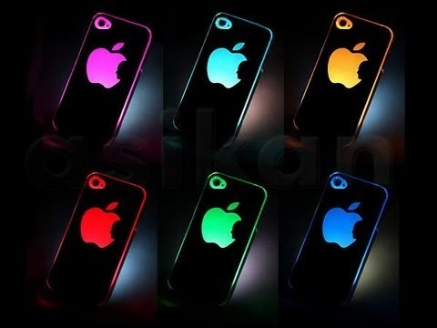
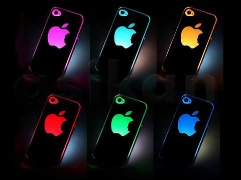
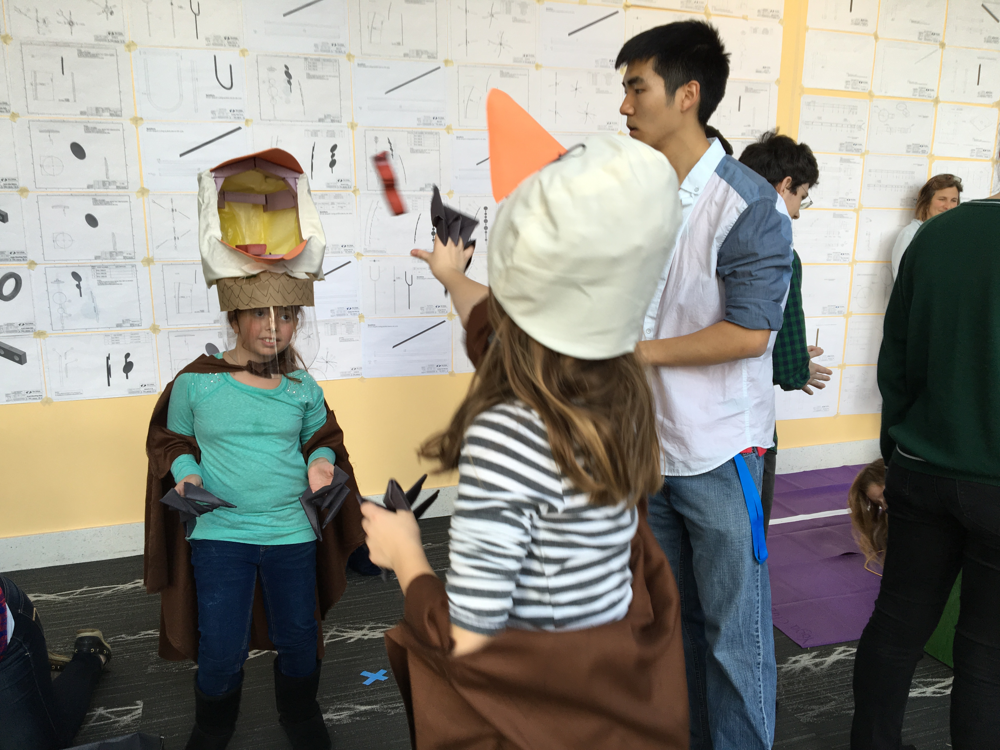
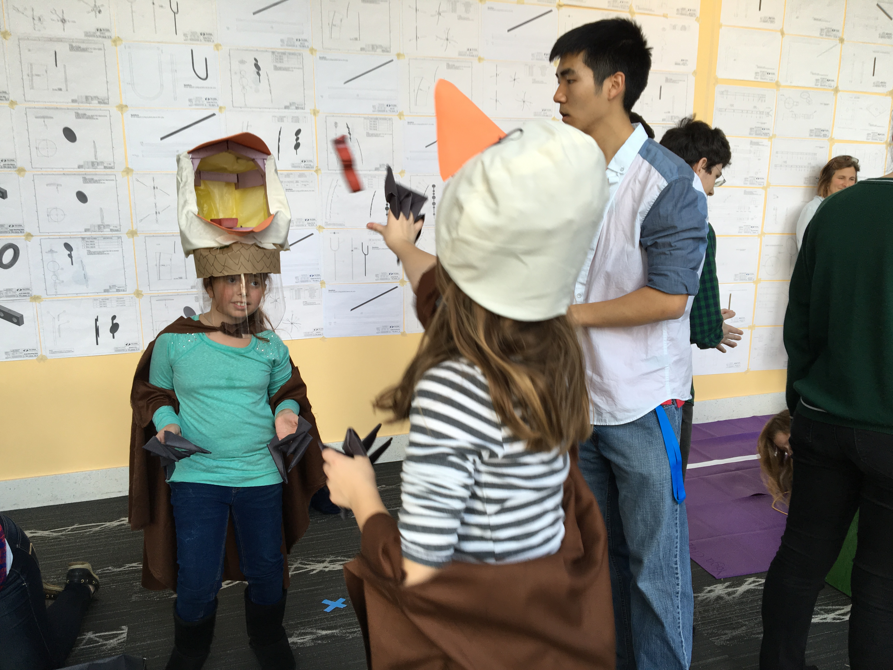

I am freshman at Franklin W. Olin College of Engineering. While not declared, I plan to major in either General Engineering with a concentration in Computing, or Electrical and Computer Engineering. I am currently stuck in a love triangle between software and circuitry, but as a growing boy hungry for knowledge and obsessed with improvement, I just can't say no to either one!
In the past, I have worked as a Boxer Property Management Corporation Treasury Intern and collaborated on side projects such as recreating '2048'. Presently, I am involved in a multitude of activities at Oln, such as Electrical Vehicles, Aquaponics, and Robotics. I also actively compete in Hackathons and collaborate on side projects.
In my free time, I enjoy playing frisbee and tennis, listening to music, learning new things about software, cooking, and hanging out with friends.
"Kevin is a detailed-oriented, and accurate intern. He was eager to learn the Boxer Property Systems and quickly grasped the Income Statement and Balance Sheet. We utilized him on several projects including the development of Project Proforma Worksheets, Pricing Analysis and Product Review. Kevin will be a great addition to any organization." - Brett Scholz, Chief Financial Officer at Boxer Property
"Kevin was a quick learner and was able to accomplish accounting tasks that more experienced people struggled with. He also accomplished tasks quickly and accurately. I would highly recommend Kevin. ." - Tim Naizer, Controller at Boxer Property


In November 2015, I attended my first hackathon at HackHolyoke. Having been at Olin for a while, I was dissatisfied with the college's bike rental system, where the sole means of "rental" was a clipboard hanging from the ceiling. With a team that was formed onsite, we developed a web app that put Olin's bike rental system on the internet. The web app could manage and monitor all the bikes allowed for rental, giving user-friendly access to checkouts, checkins, reservations, and problem reports. The app was made using HTML5, Javascript, and CSS. I wrote all of the back-end development that required HTML5 and Javascript, and the my teammates made everything look beautiful with CSS. Our team won 4th place best Hack overall, and 2nd place for Most Societally Beneficial Hack.
 


Also in November 2015, I attended my second hackathon at Codestellation in Brandeis. This time I decided to work on hardware and learn more about Arduinos. Inspired by a friend who once texted on her phone and walked straight into a wall on the way to class, my team decided to build a smart LED that could change color depending on the mood of received messages. The theory was that when a message is received on your phone, the LED will shine a specific color correlating to some standard, such as urgency or favorites, allowing the owner to know a general idea of what the message might be about and reducing the time needed to look at texts. For the purposes of the hackathon, we used the smart LED to evaulate messages on Twitter based on a positivity standard. The project combined Python Twitter API, machine learning, Arduino, and cross platform integration. When a message was sent on Twitter containing a certain hashtag, a python script would catch it and run it through a machine learning program that generated a number based on posivitiy. This number would then be beamed to the Serial Port of an Arduino, where it would be collected, analyzed and then processed to make an LED shine a specific color. I was involved in all parts of the project, mainly spearheading the Arduino portion and cross platform integration bewteen Python and Arduino, and helping out on machine learning. Our project won the award for Most Challenging Hack.
 

In the Fall of 2015, during the second half of my Design Nature class, we were told to build a bio-inspired game that would entertain 4th graders. The only premises were that we were limited to a set budget of $100, and the game should embody the animal that we chose. Our team chose the Bald Eagle, and we built our game to model the swooping and feeding behaviors of the eagle. We designed an Eagle Costume meant to provide a full-body experience, and our game was unique from others in that it was a two-stage game, the first for swooping down and grabbing fish, and the second for throwing fish into your partner's "Eagle Head" hat. For the final demonstration, real 4th graders visited Olin and came to play our games. Our play experience went extremely well, with a good number of children telling us upfront that our game was their favorite.
Fly like an Eagle Poster

In the Fall of 2015, for my final project in Introduction to Sensors, Instruments, and Measurements, we were told to utlize what we had learned throughout the semester and make something cool. My partner and I decided to create an ultrasound range finder that would spin in a circle and then process the distance points it found to produce a bird's eye view of its surroundings. The range finder was built with a breadboard and circuitry, then attached to a motor on a mount. It was connected to an arduino that would receive the data, send it to a third-party processing program that would than plot the points on an axis in real time. I worked mainly on creating the range finder and programming the Arduino and third-party processor. Come demonstration day, we showed our project to the class, and were met with astounding praise.


In the Spring of 2015, my final semester at William P. Clements High School, I decided not to let senioritis get the better of me and collaborated with two other friends to take on the challenge of recreating the popular mobile app game "2048" in Java. Having taken 4 years of formal Java training class at Clements, I felt it was time to test my skills. The game was expanded to not only recreate the original mode, but also include a beginner's mode and a two player mode where competitiors could race to see who could reach 512 first. The entire game made using solely Java. I was mainly involved with coding the homepage screen, the tutorial mode, and the original mode. We utilized many things we learned previously but also learned many new concepts such as Mouse and Keyboard Listener, JPanels, and basic animations and sound production. On the last week of school, we presented our project to the computer science class, and the students loved it. Some were even requesting copies of our code so they could take home the game. It was my first time making something that had a real world application and impacted real people.
2048 Github
In the Fall of 2015, my first semester at Olin College, I joined the school's Robotics Lab, eager to learn more about robots and how they worked. I decided to work with the lab's head programmer on Edwin, a robotic arm. Our objective was to program Edwin to respond to certain stimuli and interact with users with poses and gestures. Coding was done in Python, and ROS was used as the bridge between Python and Edwin. I mainly focused on creating sequences of motions and poses that Edwin would use to respond to certain signals from the user. At the Olin Expo, we presented our semester's work, which culminated in Edwin playing Tic-Tac-Toe against himself. Our presentation went really well, and many were fascinated in our robot's ability to draw the grid and shapes so accurately.
Edwin Github


During 2014-2015, my entire senior year at William P. Clements High School, I worked as a research intern at UT Health at the Medical Center in Houston. I was looking into visual sciences, specifically examining proteins within the eye and how they all connected together to form the massive network that allows the eyes to process photons which allows humans to see. Under the direction of Dr. O'Brien, I experiementing on zebrafish eyes to determine co-localization and possible coupling mechanisms involved in the proteins in their eyes. I gained many useful skills for the lab, including cryosectioning, immunostaining, and high-end microscopy. I also learned more about opthamology, the study of eye, and about scientific research in the real world. The internship concluded with a presentation of my work to lab associates and officials. Ultimately, I helped my department secure a grant for further research.


In the Fall of 2015, my first semester at Olin College, I joined a team of individuals that embarked on an extension of the original "Olin Workshop on the Library", a remodeling of the library to include a giant aquaponics aquarium. Aquaponics is like sustainable hydroponics, where marine life live in an area that feeds dirty water to a separate area for plant life who use the feces as fertilizer and in turn filter the water so that clean water returns to the marine life. The plan is eventually incorporate this idea into the library and make things embody the Olin Culture a bit better. Our first plan was to build a small operating aquaponics system to prove that it works. I was mainly involved in the electrial portion of the project, designing and creating the relay system, monitor system, pumps, and lights. We presented the result of a semester's worth of work at the Olin Expo, where we demonstrated a functional system (but without the fish). Students and faculty alike were excited at our progress and looking forward to our efforts next semester.


In the Fall of 2015, my first semester at Olin College, I joined REVO due to my love of electrical vehicles. This was the first year that we were going to transition from "research" to "competition", so I was excited to get in on the action. The team was designing a Formula electrical racing car that be ready for competition by the Spring of 2016. I mainly worked on the Programming Team, designing and coding CAN, our relay network that collects and distributes information across the car as well as to a monitor so the team can view the car's condition. Specifically, I worked on CAN regarding the dashboard and Watchdog. We presented our work so far at the Olin Expo, basically having finished the design portion, and ready for the fabrication portion next semester.
During the summer of 2014, I worked as a Treasury Intern at Boxer Property. I mainly worked on the annual Closing and Property Analysis. I created Electricity, Tax, and Escalation Reconciliations for over 40 properties, collaborated with coworkers on Balance Sheet Reports and Acquisitions Reports, and even worked directled under the CEO. Apparently my work was highly-valued, as I was offered a second internship at the company the summer of 2015. This time I was given a larger role in the company, expanding from the Treasury department to the Financial and AR departments. I created reconciliations for all owned properties, worked with other on Boxer F2 Appraisal Reports, and also compiled Due Diligence Reports directly for the CFO. Not only did I learned a lot about financial statements and balance sheet, the company also has given me the opptorunity to return for internship whenever I want, proving my value to the company.
Boxer Property Website


During my four years at William P. Clements High School from 2011-2015, I was part of the MAO Math Club at our school. I participated in every meeting and practiced for competitions, but I always felt that communication between members and officers was lacking, and our member attendace was dropping over the years. When I became Webmaster in my senior year, I revamped the club website, improving user-interface and accessibility. Members became more aware of the various opportunities to volunteer and compete, as well as more informed about the club's activities. I also worked with the other officers and paved the way for the creation of now known as MNHS - MAO National Honor Society. MAO became a dual-faced club, one for the original competition club, and MHNS which held the more casual members who liked math and wanted to meet and discuss cool math topics but didn't want to deal with the pressure and stress of competition. MAO has now become an intellectual hub at Clements, with over 100 members and rising.
MAO Website
From 2013-2015, I was part of the International Club, a group that exempified the diversity of culture at our school and which culminated in the school's annual International Festival, where the school celebrated and honored the many different regions of the world that are represented at the school. In 2014, I became Artistic Director and was responsible for the cultural decorations for the festival. I helped design 5 giant murals that marked 5 of the greatest cultural mythologies of the world, and then I managed and ran decoration sessions to create and paint these giant murals. I also introduced new ideas to the festival such as cultural games and an art gallery to showcase artifacts from around the world. The decorations committee finished a month early ahead of schedule, and then went on the make more decorations beyond the original standard. The International Festival that year was record-breaking and was our largest attendance to date.


During my four years at William P. Clements High School from 2011-2015, I was part of the NFL Debate Team at our school. We practiced for debate competition, with the hopes that we would qualify for the State Tournament at the end of the year with a shot at being the best in the state. I debated competitively for 4 years, qualifying two times for the Debate TFA State Tournament, and once making it into the Texas Top 50. I was also once crowned Debate MVP of my team in 2011. In my final year, I began to pass down my skills to underclassmen by running workshops and teaching novices how to debate.
Debate Team Website